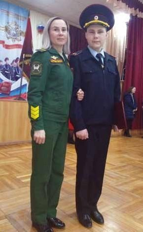
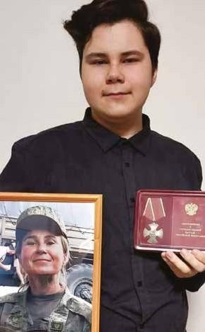
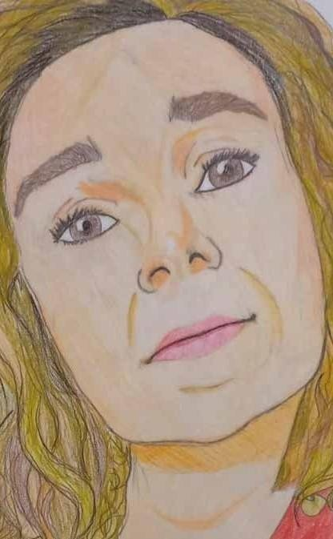

История героя · Волгоградская область
МОЯ МАМА АНАСТАСИЯ
Письмо

«Она добра, она строга
Она справедлива, и нежна
И я никогда не забуду её»
Семейный архив


Подписи к фотографиям появятся после подтверждения семьёй. Личности на снимках редакцией не устанавливались.
Детский рисунок

Портрет мамы, нарисованный цветными карандашами, — часть семейного архива истории.
Авторство рисунка будет указано после подтверждения семьёй.